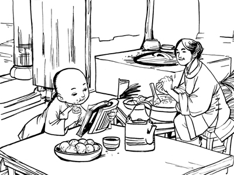

苏步青刻苦学习的故事

苏步青，1901年生，我国着名数学家、学者，曾任复旦大学名誉校长。他出生于贫苦的农民家庭，从小就在地里劳动：放牛、割草、犁田，什么都干。那时他想，这辈子肯定没有读书的机会了。 恰好，村里一户有钱人请了家庭教师，教他的公子读书。苏步青有空，就在窗外听听，随手写写画画。想不到，那位公子没学好，苏步青却因此学到不少知识。他的叔叔见他这么想学习，便拿出钱，说服苏步青的爸爸，把他送到百里之外的一所小学去读书。 在小学的第一个学期，苏步青考了个倒数第一名，老师把他叫到办公室，热忱地鼓励他。这使苏步青大受感动，决心发愤图强。真下了决心，情况就不一样了，从第二学期起一直到大学毕业，他每学期都考第一。 苏步青是抓紧时间、勤奋学习的典范。他从小学起，就抓紧时间读了好多好书。进初中后，他的第一篇作文交上去，教师一看，那写作方法，很像是古代着名的《左传》的写法，便怀疑这是不是苏步青自己写的。上课时，老师要考考他，随便点了《左传》上的一篇文章，要他说说写的是什么。不料，他立即一字不错地把那篇文章背给老师听。这使老师和同学们大吃一惊：原来，他读《左传》读得能够背出来了！